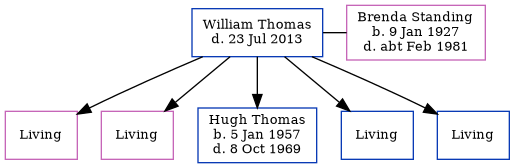

William Dennis Thomas - 2013
[ Home ] | [ Calendar ] | [ Surnames Index ] | [ Errors ] | [ Family History ]William Thomas, the husband of Brenda Margaret Standing (the fourth cousin once-removed on the father's side of Nigel Horne), and married Brenda (with whom he had 5 children: Susan C, June A, Hugh William, Steven M and Dominic P, along with 4 surviving children) in Ilford, London, England around Aug 19511.
He died on 23 Jul 2013 on the Isle of Wight, Hampshire, England.
Children
- Hugh William was born on 5 Jan 1957
Citations
- England & Wales, Marriage Index: 1916-2005 Online publication - Provo, UT, USA: The Generations Network, Inc., 2009.Original data - General Register Office. England and Wales Civil Registration Indexes. London, England: General Register Office. © Crown copyright. Published by permission of the Cont
Media
England & Wales marriages 1837-2008 Transcription - BMD-M-1951-3-PZ-000313-074
Family Tree
Map
Generated by ged2site. Last updated on Jul 3, 2024
Known Issues
Death date (23 Jul 2013) has no citations